P1
✅ 基于数据：对现有数据进行连接重组。
✅ 基于学习：对数据处理，放入模型，再生成数据。
P2
Outline
- Recap: interactive character animation
- Motion Graphs
- Motion Matching
- Statistical Models of Human Motion
- Principal Component Analysis
- Gaussian Models
P3
Recap: Interactive Animation
How to make a character respond to user command?
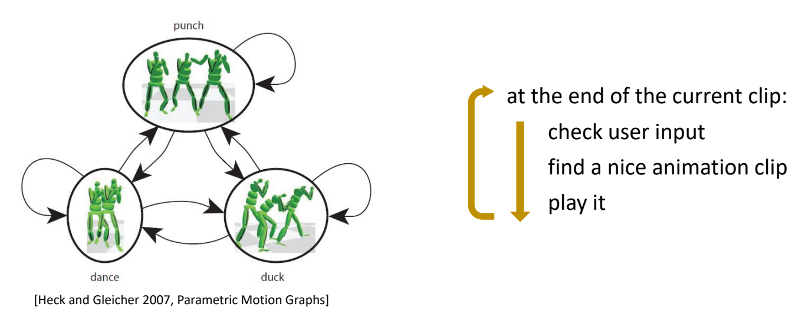
P9
Motion Graphs
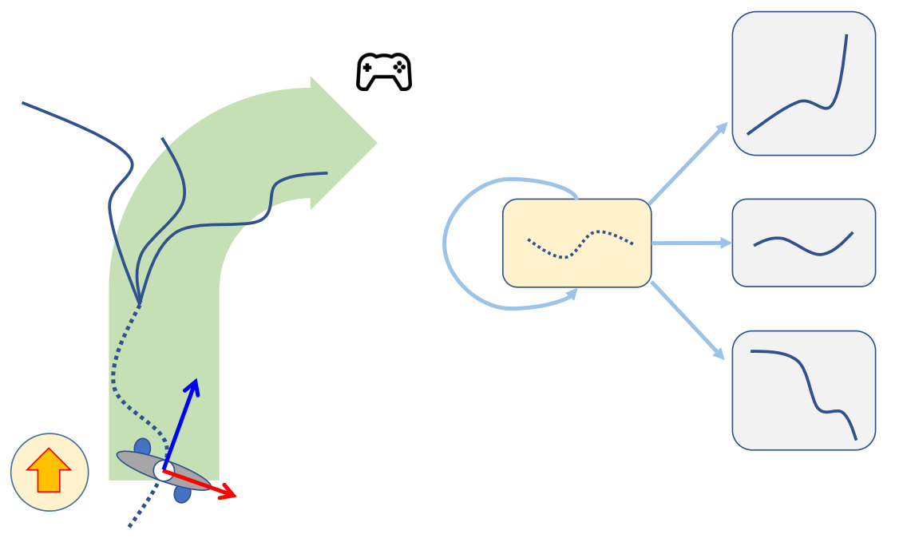
✅ 检测到用户输入后：
- 把当前片段播完（响应慢）
- 所有下一片断与当前状态进行坐标系对齐
- 根据当前状态和预期轨迹，选择下一个片断
- 播放对齐后的下一片断
✅ 可以结合路径规划算，实现一些智能角色。Motion Graph 只是一个底层数据结构。
P14
Motion Fields
| Motion Graphs / State Machines | Motion Fields / Motion Matching |
| 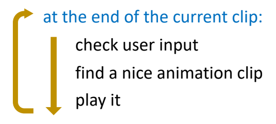 | 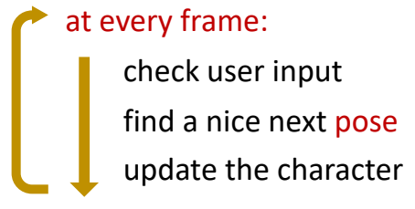 |
✅ Motion Matching 是将 Motion Fields 简化以后加一些比较好的工程实践。
P17
构建 Motion Fields
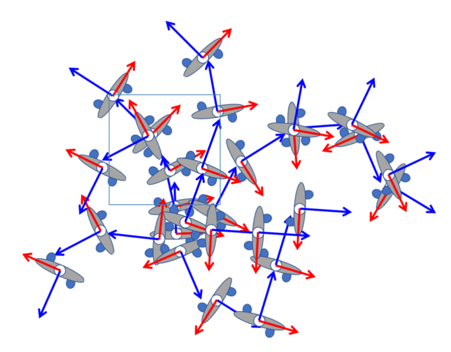
✅ 每条链路代表一个动作，灰圈代表动作里的一帧，整体构成一个很大的 Field.
P20
在Motion Fields中选择pose
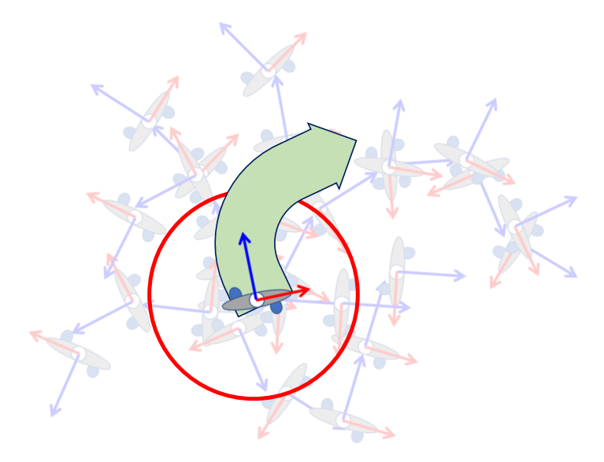
✅ 每一帧有一些最近邻，它们来自不同动作，有不同的状态。
✅ 绿色代表向右，挑出对应帧。做混合。
P23
对pose的混合
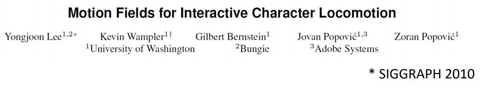
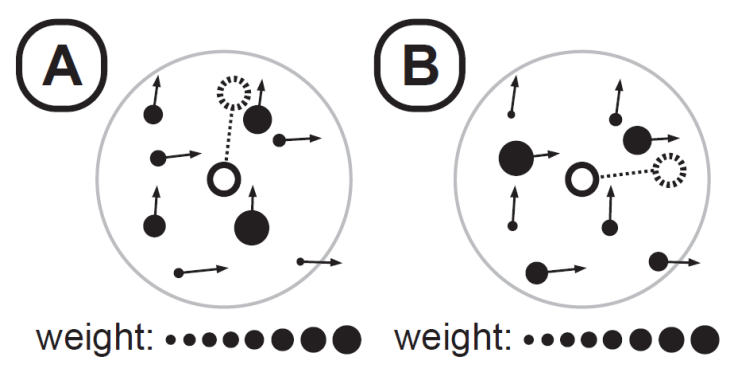
✅ 根据用户输入设置不同权重，会得到不同结果
✅ 优点：(1) 自由控制（2）支持外力，可结果物理仿真（3）不需要使首尾帧相似的预处理。
✅ 缺点：需要设计一些规则来计算最近邻的混合。
✅ 解决方法：强化学习
P24
Pipeline
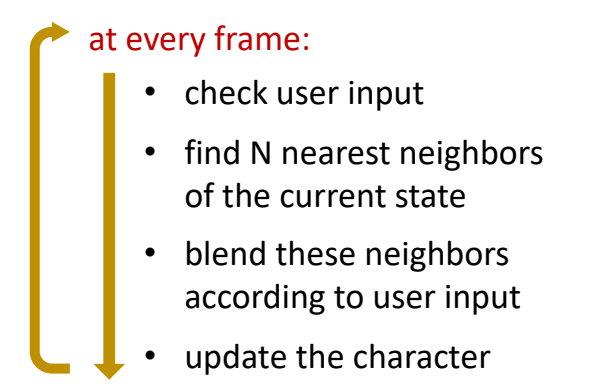
✅ 根据用户输入设计邻局的权重，这一步难以工业化。
✅ 论文使用强化学习来解决，这样增加了训练的难度。
P31
Motion Matching
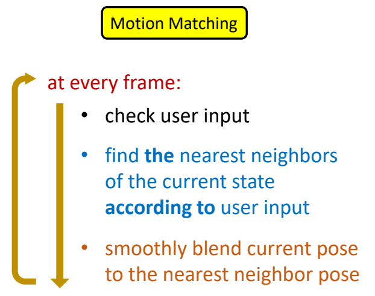
P32
✅ 简化一：只找一个最近邻，不需要 blend. 然后用平滑解决跳变问题。
P34
距离衡量函数
We need a distance function / metric to define the nearest neighbor
$$ \text{next-pose } = \min_{i \in\text{ Dataset}} ||x_{\text{curr}}-x_i|| $$
$$ x: \text{feature vector} $$
✅ Motion Matching 中距离函数的设计很重要，很大程度上影响算法的效果。
✅ 这个距离定义可以是特征相关的。
A possible set of feature vectors:
- root linear/angular velocity
- position of end effectors w.r.t. root joint
- linear/angular velocity of end effectors w.r.t. root joint
- future heading position/orientation (e.g. in 0.5s, 1.0s, 1.5s, etc.)
- foot contacts
- ……
P36
动作平滑
We need a smooth motion
- Only do the search every few frames
- Smoothly blend current pose to the target pose
- Inertialized blending (ref. https://www.theorangeduck.com/page/spring-roll-call by Daniel Holden)
搜索效率
We need a good performance
- An efficient data structure for searching，例如 e.g. KD-tree
数据集
A efficient dataset，例如“Dance card”
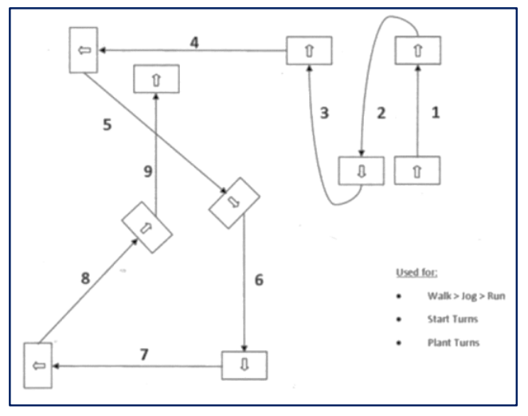
✅ 保证所使用的动作集能够覆盖到目标。
✅ 优点：(1) 实现简单 (2) 控制灵活 (3) 可结合物理仿真。
✅ 缺点：(1) 不能解决滑步
P39
Statistical Models of Human Motion
✅ 根据已有数据，对“动作自然”建模。
✅ 或找到一个模型，告诉我们什么是自然姿态。
P43
因为由于以下原因， “自然的动作”实际上是够成高维的动作参数空间的流形曲面。
- Coordinated arm/leg movement
- Musculoskeletal structure
- Laws of physics
- ……
P45
Principal Component Analysis (PCA)
- A technique for
- finding out the correlations among dimensions
- dimensionality reduction
✅ PCA 细节跳过。目的：降维，抓住主要特征。
P65
a pose \(x\) with smaller \(\sum _k\frac{((x-\bar{x})\cdot u_k)^2 }{\sigma ^2_k}\) is more likely to be a good pose
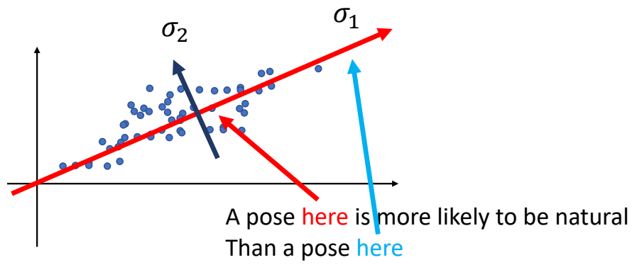
✅ 可作为动作生成的先验，告诉我一个动作是否合理。
✅ \(M_k\) 和 \(\sigma_k\) 分别是 \(k\) 维上的均值和方差。
P66
Character IK with a Motion Prior
正则化先验
$$ F(\theta )=\frac{1}{2} \sum_{i}^{} ||f_i(\theta )-\tilde{x} _i||^2_2+\frac{\lambda }{2}||\theta ||^2_2 $$
$$ \theta=(t_0,R_0,R_1,R_2\dots \dots ) $$
✅ 正则项代表主观先验: \(\theta \) 小更有可能是合理动作。
P68
PCA先验
$$ F(\theta )=\frac{1}{2} \sum_{i}^{} ||f_i(\theta )-\tilde{x} _i||^2_2 $$
$$ +\frac{w }{2}\sum_{k}^{}(\frac{(\theta -\bar{\theta })\cdot u_k }{\sigma _k} )^2 $$
✅ 把 P65 方法应用到 IK 来判断动作好坏的实例。
✅ 改进为基于统计的先验。
P71
Data Distribution
\(p(x)\) : probability that \(x\) is a natural pose
✅ 假设存在这样一个分布，但不知道分布的具体形式，要估计这样的分布
✅（1）从分布中采样，例如：动捕
✅（2）通过各种模型把分布估计出来，即从数据中估计出模型参数。
P75
Gaussian Distribution
✅ 假设分布就是高斯分布
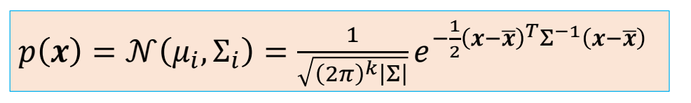
通过Maximum Likelihood Estimators (MLE，最大似然估计)得到:
$$ \begin{align*} \bar{x} &= \frac{1}{N} \sum_{i}^{} x_i \\ \Sigma & =\frac{1}{N} X^TX \end{align*} $$
P76
PCA 可以看作一种高斯分布。
$$ \sum =X^TX=U\begin{bmatrix} \sigma ^2_1 & & & \\ & \sigma ^2_2 & & \\ & & \ddots & \\ & & &\sigma ^2_N \end{bmatrix}U^T $$
$$ x-\bar{x} =\sum_{k=1}^{n} w_ku_k $$
✅ PCA 分解可以看作是坐标转换或变量代换。
P77
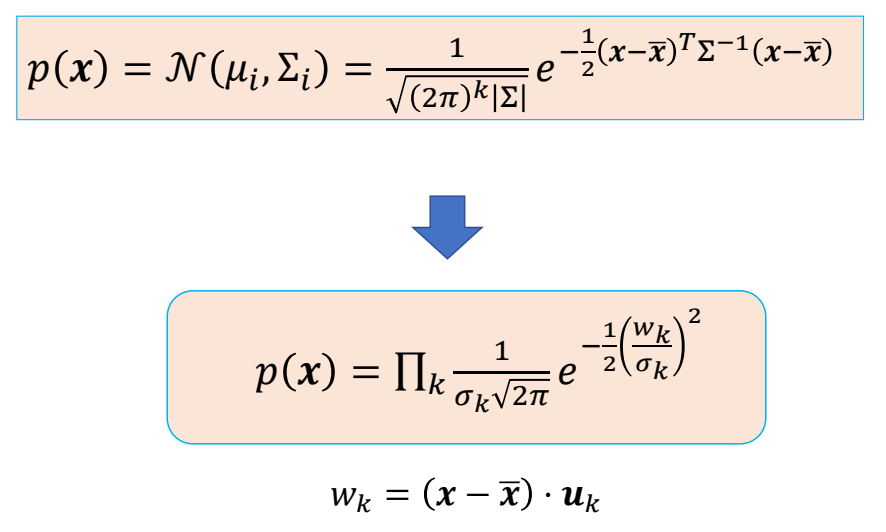
P78
Character IK with a Motion Prior
$$ F(\theta )=\frac{1}{2} \sum_{i} ||f_i(\theta )-\tilde{x} _i||^2_2+\frac{w}{2}\sum_k(\frac{(\theta -\bar{\theta })\cdot u_k }{\sigma _k} )^2 $$
P79
$$ F(\theta )=\frac{1}{2} \sum_{i}^{} ||f_i(\theta )-\tilde{x} _i||^2_2-w \log \prod_k e^{-\frac{1}{2}(\frac{(\theta -\bar{\theta })\cdot u_k }{\sigma _k} )^2 } $$
P80
$$
F(\theta )=\frac{1}{2} \sum_{i}^{} ||f_i(\theta )-\tilde{x} _i||^2_2-w \log p(\theta )
$$
$$ \theta=(t_0,R_0,R_1,R_2\dots \dots ) $$
✅ 第一项：符合目标。第二项：动作合理。
P81
Motion Synthesis with a Motion Prior
Given a motion prior \(p(x)\) learned from a set of data points \(D \)= {\(x_i\)}, Synthesize a motion \(x\) that minimize the objective
$$ f(x)=f(x)-w \log p(x ) $$
Note: \(x\) can represent a pose \(\theta\)
\(\quad\quad\) or a motion clip → a sequence of poses {\( \theta t\)}
\(\quad\quad\) or any features of a motion → e.g. \(w_k\) in PCA
✅ \(x\) 可以不局限于 \(\theta \)、而是任何一个可以描述 motion 的量。
✅ \(f(x)\) 代表目标，目标也不局限于 IK，也可以是Keyframes、User control、Environment constraints等
✅ 但“认为动作符合高斯分布”仍然是一个非常受限约束，难以用于复杂的动作
P83
相关工作
| 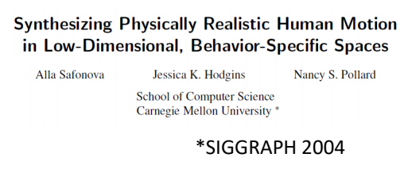 | |
| 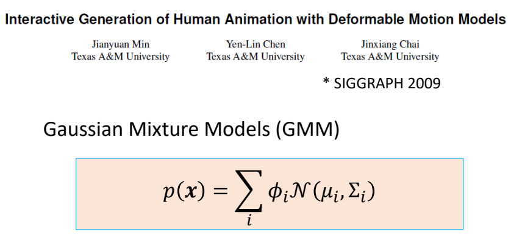 | ✅ 使用高斯混合模型，用于动作编辑。 ✅ \(x\) 不局限于单帧动作，也可以是一个序列。 |
| Min et al. 2009 | ✅ 视频动捕是欠约束问题，但可以通过分布过滤掉不合理的结果。 |
| 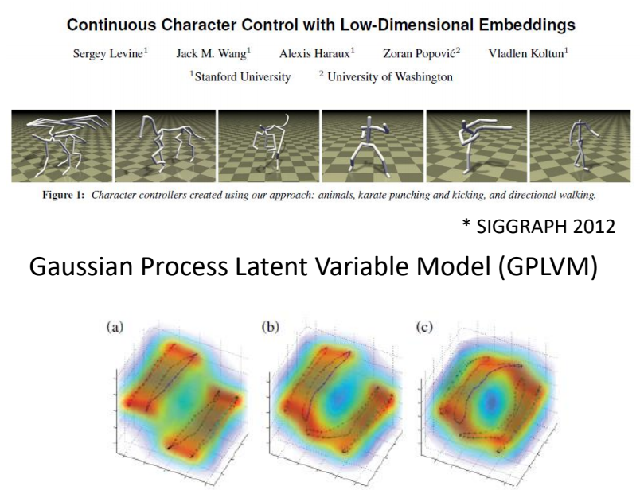 | ✅ 缺点：实现麻烦，很多超参。 |
| 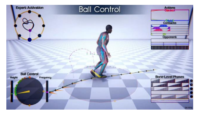 | [Starke et al 2020, Local Motion Phases for Learning Multi-Contact Character Movements] |
| 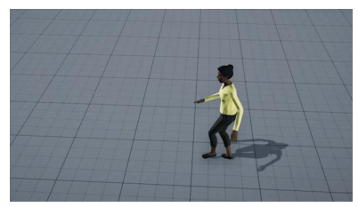 | [Henter et al. 2020, MoGlow: Probabilistic and Controllable Motion Synthesis Using Normalising Flows] |
| 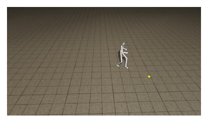 | [Lee et al 2019, Interactive Character Animation by Learning Multi-Objective Control] |
| 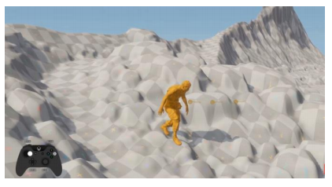 | [Holden et al 2020, Learned Motion Matching] ✅ 用 DL 代替复杂的模型，来估计动作先验。 |
本文出自CaterpillarStudyGroup，转载请注明出处。
https://caterpillarstudygroup.github.io/GAMES105_mdbook/